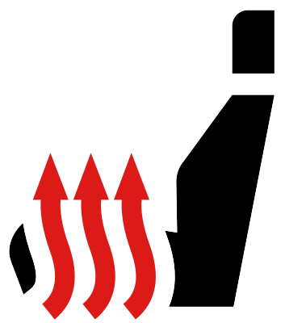

Appuyer sur la touche de fonction

ou sur l’écran Infodivertissement afin de lancer le chauffage du siège avant.
sur l’écran Infodivertissement afin de lancer le chauffage du siège avant.

Le chauffage est activé à la puissance de chauffage maximale. Un appui répété sur la touche réduit la puissance de chauffage du siège jusqu’à l’extinction.
La puissance calorifique est indiquée par le nombre de témoins de contrôle allumés sur l’écran de l’infodivertissement :
Informations complémentaires

Si le contact est coupé et remis dans un délai d’environ 10 minutes alors que le chauffage est allumé, le chauffage de sièges avant reprendra selon le réglage défini avant la coupure du moteur.
Lorsque le chauffage de siège avant est activé, il est automatiquement désactivé pour le siège inoccupé à la descente du véhicule. Le chauffage de siège se remet automatiquement en marche lorsque le siège est de nouveau occupé.